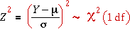
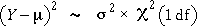
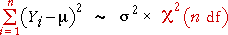

Squared difference from population mean
A squared standard normal variable has a chi-squared distribution with 1 degree of freedom,

We will find it more useful to deal with the squared difference of Y from µ without dividing by σ. This has a scaled version of the chi-squared distribution,

Sum of n squared normals
A random sample consists of n such independent normal random variables, Y1, Y2, ..., Yn. The sum of their squared differences from µ has a more general form of chi-squared distribution — a chi-squared distribution with n degrees of freedom.

Shape of the chi-squared distribution (n d.f.)
The diagram below shows the chi-squared distribution for different values of n, its degrees of freedom.
Note the following properties of the distribution.